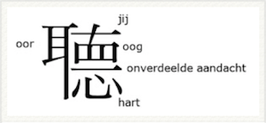

Hieronder staan aan de linkerzijde van een aantal liederen luistervoorbeelden. Aan de rechterzijde vindt je de uitspraak van sommige liederen, door personen in hun moedertaal.
|  | |
| Voorbeelden | Uitspraakvoorbeelden |
|---|---|
| K22 Mostan Kinyílt: mostan.mp3 | K23 Kalanda Kastoriá: kastoria.mp3 |
| Link K23 Kalanda Kastoriá: hier | K19 Ninna nanna di Gesú Bambino: ninna.mp3 |
| K24 Kalanda: kalanda.mp3 | B100 Nyne van Archangelskij: nyne.mp3 |
| B101 Syrtos Rhodou: syrtos.mp3 | K20 En stjerne klar: stjerne.mp3 |
| B102 Psintri Vasilitzia: psintri.mp3 | B99 Vecher, gesproken* kort (incl. mannen Kachayetsa): vecherkort.mp3 |
| S6 Brala Bih Kupusa: brala.mp3 | B99 Vecher gesproken*, langzaam sopraan partij: vechersopraan.mp3 |
| B99 Vecher, gezongen door Voronez Kamerkoor: voronez.mp3 | (*) Met dank aan Sergé Latychev voor zijn poëtische Russische klanken; moge die ons inspireren bij onze uitvoeringen. |
| B89 Cheruvimska pesen, zonder alleluija: cheruvimkort.mp3 | |
| B88 Okolo Hradisca, gezongen: okolo19.mp3 | B88 Okolo Hradisca, gesproken: okolo25.mp3 |
| B87 Skoj e vij flutrim, gezongen: shkojmixed.mp3 | B87 Skoj e vij flutrim, gesproken: shkoj.mp3 |
| B89 Cheruvimska pesen, langzaam met: cheruvimlang.mp3 | B96 Še dziedāju, gavilēju: sedziedaju.mp3 |